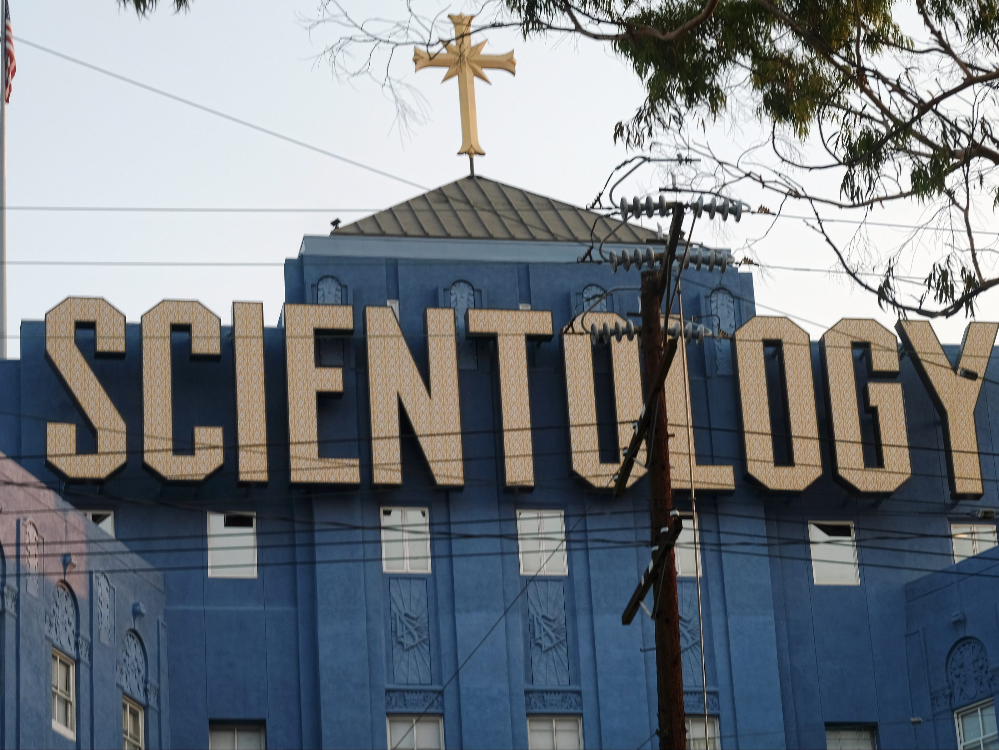

This Aug. 25, 2016, photo shows the Scientology Cross perched atop the Church of Scientology
in Los Angeles. Scientology is about to get its own television channel starting Monday,
March 11, 2018. A Twitter handle, website and app for Scientology TV appeared Sunday
posting updates to hype the network's availability on DIRECTV, AppleTV, Roku, fireTV,
Chromecast, iTunes and Google Play. (AP Photo/Richard Vogel)
The Church of Scientology is getting its own TV network, according to The Hollywood Reporter,
leading to rumours that Tom Cruise and other famous followers could participate in the new venture.
The controversial religion is reportedly ready to launch a channel on DirectTV and platforms Apple TV
and Roku on tomorrow — Monday, March 12.
Running the app reveals a placeholder announcement that content will officially launch at
8 p.m. ET/5 p.m. P.T. on Monday; and a Twitter account looks also ready to go.